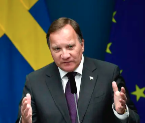

Löfven: Gängkriminalitet ”ett gift” i samhället
2020-09-07
Gängkriminaliteten är ”ett gift” i samhället som måste tas bort. Det sa statsminister Stefan Löfven under måndagens presskonferens. Han aviserade samtidigt att ytterligare åtgärder kopplade till rättsväsendet är att vänta.
– Vi återkommer i de delarna, säger Löfven.